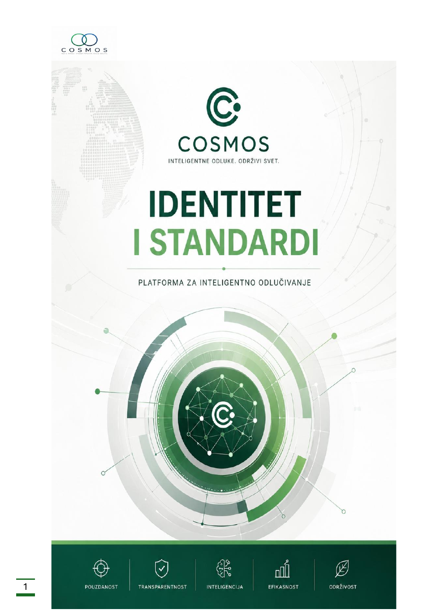

01
Problem određuje analizu
Ne polazimo od podataka koje imamo, već od problema koji treba razumeti.
Red u haosu nije konačno stanje. To je trajan proces razumevanja sveta i odgovornog odlučivanja.
Referentni primer za „COSMOS details“: više editorial, manje dashboard, sa naglaskom na metodologiju, standarde i poverenje.

COSMOS najpre gradi zajedničku platformu i metodološku osnovu, a zatim na njoj razvija specijalizovane alate. Time se znanje ne fragmentira po proizvodima, već postaje deo zajedničkog ekosistema.
Ne prikazivati svih deset načela kao dugu listu. Umesto toga, koristiti nekoliko visokovrednih principa koji odmah objašnjavaju razliku COSMOS-a u odnosu na generičke AI proizvode.
Ne polazimo od podataka koje imamo, već od problema koji treba razumeti.
Složeni procesi se posmatraju kao međusobno povezani sistemi.
Zaključak mora da se objasni podacima, modelom i logikom analize.
Tehnologija proširuje razumevanje, ali odluku donosi čovek.
Veliki prostor, precizna geometrija, koncentrični prstenovi, tanke veze i ograničena paleta. Bez cyberpunk estetike, stock „AI“ fotografija, neon elemenata i prenatrpanih dashboard kartica.